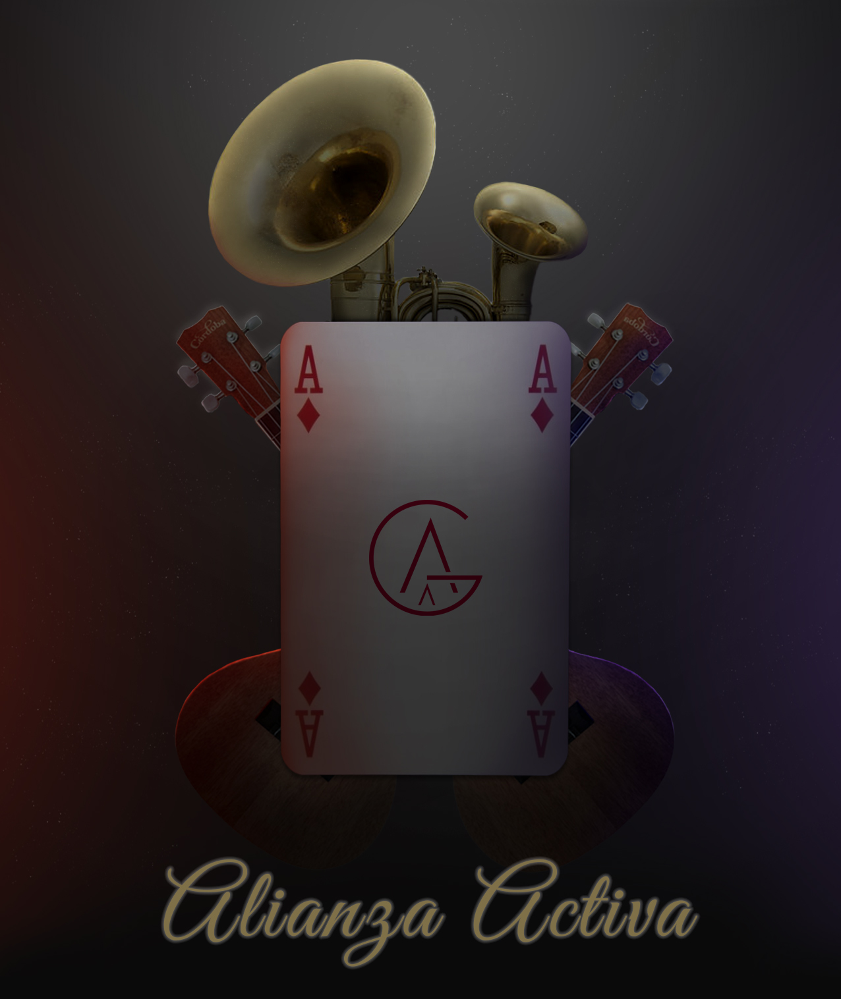

Lab 17 Layout Practice
Float Layout
Flexbox Layout
Back to Home

Challanges
This lab was filled with a lot of challenges. However, for the most part, they were easy to overcome and navigate through. Our first challenge was to create our normal html as we always do. We then made a very rough outline so we could copy and paste out code ofr html and css into the Flexbox and Float pages while not wasting time with stylizing early on. They new html and css such as the Float and Felxbox pages were the challenges prior to the usual page set up. We used the same css stylising and layout of info, but the challnege was to rearrange our flexboxed that we would add to html and css as well as the float boxes.
Problems
My partner and I had problems with getting out boxes to go to the right place we envisioned and sketched out before hand. It was diffucult on let alone on of the html's and css' but we then had to do it on two more sets of pages which turned out to be very time consuming. We had troubled with fitting images into borders and chanching colors of text. These are easy solvable problems however. The big problems arose when we need to chaneg the whole layout and positioning of everything the next time we set up a specific page.
Results
We finished strong with a overall, a well spent work period with minimal problems. It took a little bit of time but it was too hard which was a little unexpected. It was super fun to see the link conect to each other and take us to a page that was similar yet slightley different to the the others. This could be very useful in creating pages of a website that have the same overall theme but different contents.